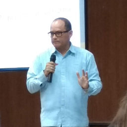

Sistema Estatal Anticorrupción y Ley General de Responsabilidades Administrativas

Víctor S. Peña
Es Doctor en Política Pública por el Tecnológico de Monterrey. Miembro del Sistema Nacional de Investigadores, Nivel I.
Sobre políticas públicas, combate a la corrupción, la participación ciudadana y la transparencia, es autor de una veintena de capítulos en libros y artículos en revistas especializadas, nacionales e internacionales. Ha participado como autor, coautor o coordinador de siete libros.
Ha realizado estancias de investigación en la Universidad San Martín de Porres (Perú), la Universidad de Santiago de Chile, el Consejo de Participación Ciudadana y Control Social (Ecuador) y el Instituto de Investigación Urbana y Territorial (España). Ha participado como conferencista magistral invitado y ponente en eventos académicos nacionales e internacionales, incluyendo países del Caribe, Centro y Sur América, Europa y África.
Por acuerdo del Senado de la República, integrante del Consejo Consultivo del Instituto Nacional de Transparencia, Acceso a la Información y Protección de Datos Personales (INAI) para el periodo 2017-2018.
Actualmente está adscrito al Centro de Estudios en Gobierno y Asuntos Públicos en El Colegio de Sonora, donde se desempeña como Director (desde febrero de 2018).
Entre sus trabajos recientes destacan una investigación sobre “Municipio Abierto" desarrollado con el apoyo de la Unión Iberoamericana de Municipalistas, como consultor para el INAI elaboró el documento teórico del “Modelo de Gobierno Abierto” aprobado por el Sistema Nacional de Transparencia, Acceso a la Información Pública, la coautoría del libro “Historia panorámica del Congreso del Estado de Sonora Volumen II, 2000-2016" y "La clase político-legislativa en Sonora. Legisladoras y legisladores del Congreso del Estado, 1939-2018” (ambos en 2017, coedición Congreso de Sonora-El Colegio de Sonora).